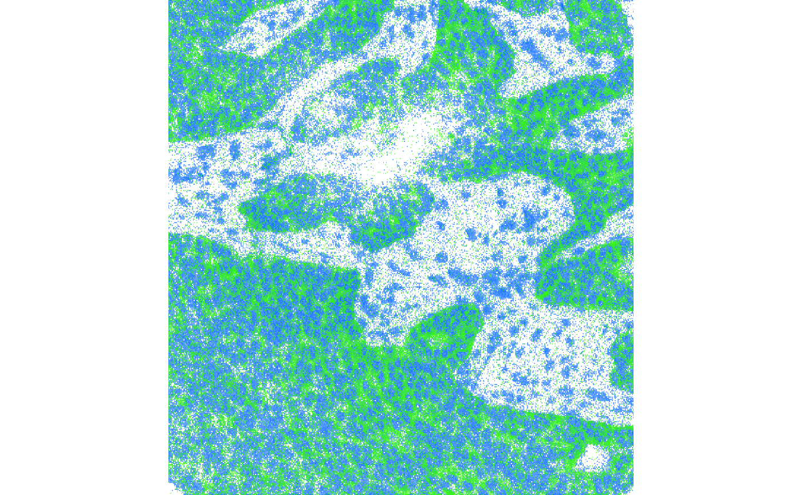

Introduction
The Zarr specification defines a format for chunked, compressed, N-dimensional arrays. It’s design allows efficient access to subsets of the stored array, and supports both local and cloud storage systems. Zarr is experiencing increasing adoption in a number of scientific fields, where multi-dimensional data are prevalent. In particular as a back-end to the The Open Microscopy Environment’s OME-NGFF format for storing bioimaging data in the cloud.
Rarr is intended to be a simple interface to reading and writing individual Zarr arrays. It is developed in R and C with no reliance on external libraries or APIs for interfacing with the Zarr arrays. Additional compression libraries (e.g. blosc) are bundled with Rarr to provide support for datasets compressed using these tools.
Limitations with Rarr
If you know about Zarr arrays already, you’ll probably be aware they can be stored in hierarchical groups, where additional meta data can explain the relationship between the arrays. Currently, Rarr is not designed to be aware of these hierarchical Zarr array collections. However, the component arrays can be read individually by providing the path to them directly.
Currently, there are also limitations on the Zarr datatypes that can be accessed using Rarr. For now most numeric types can be read into R, although in some instances e.g. 64-bit integers there is potential for loss of information. Writing is more limited with support only for datatypes that are supported natively in R and only using the column-first representation.
Example data
The are some example Zarr arrays included with the package. These were created using the Zarr Python implementation and are primarily intended for testing the functionality of Rarr. You can use the code below to list the complete set on your system, however it’s a long list so we don’t show the output here.
list.dirs(
system.file("extdata", "zarr_examples", package = "Rarr"),
recursive = TRUE
) |>
grep(pattern = "zarr$", value = TRUE)Quick start guide
Installation and setup
If you want to quickly get started reading an existing Zarr array with the package, this section should have the essentials covered. First, we need to install Rarr1 with the commands below.
## we need BiocManager to perform the installation
if (!require("BiocManager", quietly = TRUE)) {
install.packages("BiocManager")
}
## install Rarr
BiocManager::install("Rarr")Once Rarr is installed, we have to load it into our R session:
Rarr can be used to read files either on local disk or on remote S3 storage systems. First lets take a look at reading from a local file.
Reading a from a local Zarr array
To demonstrate reading a local file, we’ll pick the example file containing 32-bit integers arranged in the “column first” ordering.
zarr_example <- system.file(
"extdata",
"zarr_examples",
"column-first",
"int32.zarr",
package = "Rarr"
)Exploring the data
We can get an summary of the array properties, such as its shape and
datatype, using the function zarr_overview()2.
zarr_overview(zarr_example)## Type: Array
## Path: /home/runner/work/_temp/Library/Rarr/extdata/zarr_examples/column-first/int32.zarr
## Shape: 30 x 20 x 10
## Chunk Shape: 10 x 10 x 5
## No. of Chunks: 12 (3 x 2 x 2)
## Data Type: int32
## Endianness: little
## Compressor: bloscYou can use this to check that the location is a valid Zarr array,
and that the shape and datatype of the array content are what you are
expecting. For example, we can see in the output above that the data
type (int32) corresponds to what we expect.
Reading the Zarr array
The summary information retrieved above is required, as to read the
array with Rarr you need to know the shape and size of
the array (unless you want to read the entire array). From the previous
output we can see our example array has three dimensions of size 30 x 20
x 10. We can select the subset we want to extract using a
list. The list must have the same length as the number of
dimensions in our array, with each element of the list corresponding to
the indices you want to extract in that dimension.
index <- list(1:4, 1:2, 1)We then extract the subset using read_zarr_array():
read_zarr_array(zarr_example, index = index)## , , 1
##
## [,1] [,2]
## [1,] 1 2
## [2,] 1 0
## [3,] 1 0
## [4,] 1 0Reading from S3 storage
Reading files in S3 storage works in a very similar fashion to local
disk. This time the path needs to be a URL to the Zarr array. We can
again use zarr_overview() to quickly retrieve the array
metadata.
s3_address <- "https://uk1s3.embassy.ebi.ac.uk/idr/zarr/v0.4/idr0076A/10501752.zarr/0"
zarr_overview(s3_address)## Type: Array
## Path: https://uk1s3.embassy.ebi.ac.uk/idr/zarr/v0.4/idr0076A/10501752.zarr/0
## Shape: 50 x 494 x 464
## Chunk Shape: 1 x 494 x 464
## No. of Chunks: 50 (50 x 1 x 1)
## Data Type: float64
## Endianness: little
## Compressor: bloscThe output above indicates that the array is stored in 50 chunks,
each containing a slice of the overall data. In the example below we use
the index argument to extract the first and tenth slices
from the array. Choosing to read only 2 of the 50 slices is much faster
than if we opted to download the entire array before accessing the
data.
z2 <- read_zarr_array(s3_address, index = list(c(1, 10), NULL, NULL))We then plot our two slices on top of one another using the
image() function.
## plot the first slice in blue
image(
log2(z2[1, , ]),
col = hsv(h = 0.6, v = 1, s = 1, alpha = 0:100 / 100),
asp = dim(z2)[2] / dim(z2)[3],
axes = FALSE
)
## overlay the tenth slice in green
image(
log2(z2[2, , ]),
col = hsv(h = 0.3, v = 1, s = 1, alpha = 0:100 / 100),
asp = dim(z2)[2] / dim(z2)[3],
axes = FALSE,
add = TRUE
)
Note: if you receive the error message
"Error in stop(aws_error(request$error)) : bad error message"
it is likely you have some AWS credentials available in to your R
session, which are being inappropriately used to access this public
bucket. Please see the section @ref(s3-client) for details on how to set
credentials for a specific request.
Writing to a Zarr array
Up until now we’ve only covered reading existing Zarr array into R. However, Rarr can also be used to write R data to disk following the Zarr specification. To explore this, lets create an example array we want to save as a Zarr. In this case it’s going to be a three dimensional array and store the values 1 to 600.
path_to_new_zarr <- file.path(tempdir(), "new.zarr")
write_zarr_array(
x = x,
zarr_array_path = path_to_new_zarr,
chunk_dim = c(10, 5, 1)
)We can check that the contents of the Zarr array is what we’re
expecting. Since the contents of the whole array will be too large to
display here, we use the index argument to extract rows 6
to 10, from the 10th column and 1st slice. That should be the values 96,
97, 98, 99, 100, but retaining the 3-dimensional array structure of the
original array. The second line below uses identical() to
confirm that reading the whole Zarr returns something equivalent to our
original input x.
read_zarr_array(zarr_array_path = path_to_new_zarr, index = list(6:10, 10, 1))## , , 1
##
## [,1]
## [1,] 96
## [2,] 97
## [3,] 98
## [4,] 99
## [5,] 100
identical(read_zarr_array(zarr_array_path = path_to_new_zarr), x)## [1] TRUEAdditional details
Working with Zarr metadata
By default the zarr_overview() function prints a summary
of the array to screen, so you can get a quick idea of the array
properties. However, there are times when it might be useful to compute
on that metadata, in which case printing to screen isn’t very helpful.
If his is the case the function also has the argument
as_data_frame which toggles whether to print the output to
screen, as seen before above, or to return a data.frame
containing the array details.
zarr_overview(zarr_example, as_data_frame = TRUE)## path
## 1 /home/runner/work/_temp/Library/Rarr/extdata/zarr_examples/column-first/int32.zarr
## data_type endianness compressor dim chunk_dim nchunks
## 1 int32 little blosc 30, 20, 10 10, 10, 5 3, 2, 2Using credentials to access S3 buckets
If you’re accessing data in a private S3 bucket, you can set the
environment variables AWS_ACCESS_KEY_ID and
AWS_SECRET_ACCESS_KEY to store your credentials. For
example, lets try reading a file in a private S3 bucket:
zarr_overview("https://s3.embl.de/rarr-testing/bzip2.zarr")## Error:
## ! AccessDenied (HTTP 403). Access Denied.We can see the “Access Denied” message in our output, indicating that
we don’t have permission to access this resource as an anonymous user.
However, if we use the key pair below, which gives read-only access to
the objects in the rarr-testing bucket, we’re now able to
interrogate the files with functions in Rarr.
Sys.setenv(
"AWS_ACCESS_KEY_ID" = "bYUBYVg1AsEreuDgtg5K",
"AWS_SECRET_ACCESS_KEY" = "r8FrLXc9dseD6V1P3htsu7ZBzP7Gszsd3sM1G4KX"
)
zarr_overview("https://s3.embl.de/rarr-testing/bzip2.zarr")## Type: Array
## Path: https://s3.embl.de/rarr-testing/bzip2.zarr
## Shape: 20 x 10
## Chunk Shape: 10 x 10
## No. of Chunks: 2 (2 x 1)
## Data Type: int32
## Endianness: little
## Compressor: NoneBehind the scenes Rarr makes use of the paws suite of packages (https://paws-r.github.io/) to interact with S3 storage. A comprehensive overview of the multiple ways credentials can be set and used by paws can be found at https://github.com/paws-r/paws/blob/main/docs/credentials.md. If setting environment variables as above doesn’t work or is inappropriate for your use case please refer to that document for other options.
Creating an S3 client
Although Rarr will try its best to find appropriate
credentials and settings to access a bucket, it is not always
successful. Once such example is when you have AWS credentials set
somewhere and you try to access a public bucket. We can see an example
of this below, where we access the same public bucket used in
@ref(read-s3), but it now fails because we have set the
AWS_ACCESS_KEY_ID environment variable in the previous
section.
s3_address <- "https://uk1s3.embassy.ebi.ac.uk/idr/zarr/v0.4/idr0076A/10501752.zarr/0"
zarr_overview(s3_address)## You might encounter similar problems if you’re trying to access
multiple buckets each of which require different credentials. The
solution here is to create an “s3_client” using
paws.storage::s3(), which contains all the required details
for accessing a particular bucket. Doing so will prevent
Rarr from trying to determine things on its own, and
gives you complete control over the settings used to communicate with
the S3 bucket. Here’s an example that will let us access the failing
bucket by creating a client with anonymous credentials.
s3_client <- paws.storage::s3(
config = list(
credentials = list(anonymous = TRUE),
region = "auto",
endpoint = "https://uk1s3.embassy.ebi.ac.uk"
)
)If you’re accessing a public bucket, the most important step is to
provide a credentials list with
anonymous = TRUE. Doing so ensures that no attempts to find
other credentials are made, and prevents the problems seen above. If
you’re using files on Amazon AWS storage you’ll need to set the
region to whatever is appropriate for your data
e.g. "us-east-2", "eu-west-3", etc. For other
S3 providers that don’t have regions use the value "auto"
as in the example below. Finally the endpoint argument is
the full hostname of the server where your files can be found. For more
information on creating an S3 client see the paws.storage
documentation.
We can then pass our s3_client to zarr_overview() and it
now works successfully.
zarr_overview(s3_address, s3_client = s3_client)## Type: Array
## Path: https://uk1s3.embassy.ebi.ac.uk/idr/zarr/v0.4/idr0076A/10501752.zarr/0
## Shape: 50 x 494 x 464
## Chunk Shape: 1 x 494 x 464
## No. of Chunks: 50 (50 x 1 x 1)
## Data Type: float64
## Endianness: little
## Compressor: bloscMost functions in Rarr have the
s3_client argument and it can be applied in the same
way.
Writing subsets of data
One of the key features of the Zarr specification is that the arrays
are chunked, allowing rapid access to the required data without needed
to read or write everything else. If you want to modify a subset of a
Zarr array, it is very inefficient to write all chunks to disk, which is
what write_zarr_array() does. Instead,
Rarr provides two functions for reducing the amount of
writing required if the circumstances allow:
create_empty_zarr_array() and
update_zarr_array().
Creating an “empty” array
Despite the name, you can actually think of
create_empty_zarr_array() as creating an array where all
the values are the same. The Zarr specification allows for
“uninitialized” chunks, which are not actually present on disk. In this
case, any reading application assumes the entirety of the chunk is
filled with a single value, which is found in the array metadata. This
allows for very efficient creation of the new array, since only a small
metadata file is actually written. However it is necessary to provide
some additional details, such as the shape of the array, since there’s
no R array to infer these from. Let’s look at an example:
path <- tempfile()
create_empty_zarr_array(
zarr_array_path = path,
dim = c(50, 20),
chunk_dim = c(5, 10),
data_type = "integer",
fill_value = 7L
)First we have to provide a location for the array to be created using
the zarr_array_path argument. Then we provide the
dimensions of the new array, and the shape of the chunks it should be
split into. These two arguments must be compatible with one another
i.e. have the same number of dimensions and no value in
chunk_dim should exceed the corresponding value in
dim. The data_type argument defines what type
of values will be stored in the array. This is currently limited to:
"integer", "double", and
"string"3. Finally we use the fill_value
argument to provide our default value for the uninitialized chunks. The
next few lines check what’s actually been created on our file system.
First, we use list.files() to confirm that that only file
that’s been created is the .zarray metadata; there are no
chunk files. Then we use table() to check the contents of
the array, and confirm that when it’s read the resulting array in R is
full of 7s, our fill value.
list.files(path, all.files = TRUE, no.. = TRUE)## [1] ".zarray"
table(read_zarr_array(path))##
## 7
## 1000Updating a subset of an existing array
Lets assume we want to update the first row of our array to contain
the sequence of integers from 1 to 20. In the code below we create an
example vector containing the new data. We then use
update_zarr_array(), passing the location of the Zarr and
the new values to be inserted. Finally, we provide the
index argument which defines which elements in the Zarr
array should be updated. It’s important that the shape and number of
values in x corresponds to the total count of points in the
Zarr array we want to update e.g. in this case we’re updating a single
row of 20 values.
x <- 1:20
update_zarr_array(
zarr_array_path = path,
x = x,
index = list(1, 1:20)
)As before, we can take a look at what’s happened on disk and confirm the values are present in the array if we read it into R.
list.files(path, all.files = TRUE, no.. = TRUE)## [1] ".zarray" "0.0" "0.1"
read_zarr_array(path, index = list(1:2, 1:5))## [,1] [,2] [,3] [,4] [,5]
## [1,] 1 2 3 4 5
## [2,] 7 7 7 7 7
table(read_zarr_array(path))##
## 1 2 3 4 5 6 7 8 9 10 11 12 13 14 15 16 17 18 19 20
## 1 1 1 1 1 1 981 1 1 1 1 1 1 1 1 1 1 1 1 1Here list.files() confirms that there’s now two chunk
files that have been created. When we first created the Zarr we
specified that the chunks should be 10 columns wide, so by modifying 20
columns we’d expect at least two chunks to be realized on disk. We use
read_zarr_array() to confirm visually that the first row
contains our sequence of values, whilst the second row is still all 7.
We use table() to confirm that the total contents is as
expected.
Using the DelayedArray framework
Rarr can make use of the DelayedArray package to provide a more ‘array-like’ interface to Zarr array, and use delayed operations and block processing to efficiently work with large on-disk data.
Working with an existing Zarr array
To demonstrate using the DelayedArray framework, we’ll pick the example file containing 32-bit integers arranged in the “column first” ordering.
zarr_example <- system.file(
"extdata",
"zarr_examples",
"column-first",
"int32.zarr",
package = "Rarr"
)We use the function ZarrArray() to create a
ZarrArray object backed by the Zarr file.
zarr_array <- ZarrArray(zarr_example)We can print this to screen and see a nice visual representation of this 3 dimensional array, and confirm that the array is both a ZarrArray and DelayedArray
zarr_array## <30 x 20 x 10> ZarrArray object of type "integer":
## ,,1
## [,1] [,2] [,3] [,4] ... [,17] [,18] [,19] [,20]
## [1,] 1 2 3 4 . 17 18 19 20
## [2,] 1 0 0 0 . 0 0 0 0
## ... . . . . . . . . .
## [29,] 1 0 0 0 . 0 0 0 0
## [30,] 1 0 0 0 . 0 0 0 0
##
## ...
##
## ,,10
## [,1] [,2] [,3] [,4] ... [,17] [,18] [,19] [,20]
## [1,] 0 0 0 0 . 0 0 0 0
## [2,] 0 0 0 0 . 0 0 0 0
## ... . . . . . . . . .
## [29,] 0 0 0 0 . 0 0 0 0
## [30,] 0 0 0 0 . 0 0 0 0
is(zarr_array)## [1] "ZarrArray" "DelayedArray" "DelayedUnaryIsoOp"
## [4] "DelayedUnaryOp" "DelayedOp" "Array"
dim(zarr_array)## [1] 30 20 10
chunkdim(zarr_array)## [1] 10 10 5Realizing an in-memory array to Zarr
X <- matrix(rnorm(1000), ncol = 10)
zarr_path <- tempfile(fileext = ".zarr")
zarr_X <- writeZarrArray(X, zarr_array_path = zarr_path, chunk_dim = c(10, 10))
zarr_X## <100 x 10> ZarrMatrix object of type "double":
## [,1] [,2] [,3] ... [,9] [,10]
## [1,] -1.400043517 -0.387213575 -0.429380087 . 1.5349158 1.3806093
## [2,] 0.255317055 -0.785432656 1.360461327 . -0.4161987 1.6750109
## [3,] -2.437263611 -1.056736867 -0.070857431 . -0.5205438 1.1769066
## [4,] -0.005571287 -0.795541430 -0.272153684 . 0.8505839 -0.1488983
## [5,] 0.621552721 -1.756275428 -2.446680029 . 0.3344966 -0.1778234
## ... . . . . . .
## [96,] 1.6728826 0.1329921 -1.5150245 . -1.47658453 1.11582792
## [97,] -0.3543612 0.3764993 -1.4160239 . -1.37777577 0.47013513
## [98,] 0.9463479 1.1387077 0.8767773 . -1.34567231 0.86061271
## [99,] 1.3168264 1.2412631 0.6241324 . -0.73663796 -0.07039665
## [100,] -0.2966400 0.6120909 2.1122773 . -0.47011150 -0.61318021Appendix
Session info
## R version 4.5.2 (2025-10-31)
## Platform: x86_64-pc-linux-gnu
## Running under: Ubuntu 24.04.3 LTS
##
## Matrix products: default
## BLAS: /usr/lib/x86_64-linux-gnu/openblas-pthread/libblas.so.3
## LAPACK: /usr/lib/x86_64-linux-gnu/openblas-pthread/libopenblasp-r0.3.26.so; LAPACK version 3.12.0
##
## locale:
## [1] LC_CTYPE=C.UTF-8 LC_NUMERIC=C LC_TIME=C.UTF-8
## [4] LC_COLLATE=C.UTF-8 LC_MONETARY=C.UTF-8 LC_MESSAGES=C.UTF-8
## [7] LC_PAPER=C.UTF-8 LC_NAME=C LC_ADDRESS=C
## [10] LC_TELEPHONE=C LC_MEASUREMENT=C.UTF-8 LC_IDENTIFICATION=C
##
## time zone: UTC
## tzcode source: system (glibc)
##
## attached base packages:
## [1] stats4 stats graphics grDevices utils datasets methods
## [8] base
##
## other attached packages:
## [1] Rarr_1.11.24 DelayedArray_0.36.0 SparseArray_1.10.8
## [4] S4Arrays_1.10.1 abind_1.4-8 IRanges_2.44.0
## [7] S4Vectors_0.48.0 MatrixGenerics_1.22.0 matrixStats_1.5.0
## [10] Matrix_1.7-4 BiocGenerics_0.56.0 generics_0.1.4
## [13] BiocStyle_2.38.0
##
## loaded via a namespace (and not attached):
## [1] rappdirs_0.3.4 sass_0.4.10 xml2_1.5.2
## [4] lattice_0.22-7 paws.common_0.8.8 digest_0.6.39
## [7] magrittr_2.0.4 evaluate_1.0.5 grid_4.5.2
## [10] bookdown_0.46 fastmap_1.2.0 R.oo_1.27.1
## [13] jsonlite_2.0.0 R.utils_2.13.0 BiocManager_1.30.27
## [16] codetools_0.2-20 httr2_1.2.2 textshaping_1.0.4
## [19] jquerylib_0.1.4 cli_3.6.5 rlang_1.1.7
## [22] crayon_1.5.3 XVector_0.50.0 R.methodsS3_1.8.2
## [25] cachem_1.1.0 yaml_2.3.12 tools_4.5.2
## [28] curl_7.0.0 vctrs_0.7.1 R6_2.6.1
## [31] lifecycle_1.0.5 fs_1.6.6 ragg_1.5.0
## [34] desc_1.4.3 pkgdown_2.2.0 bslib_0.10.0
## [37] pillar_1.11.1 glue_1.8.0 Rcpp_1.1.1
## [40] systemfonts_1.3.1 xfun_0.56 paws.storage_0.9.0
## [43] knitr_1.51 htmltools_0.5.9 rmarkdown_2.30
## [46] compiler_4.5.2